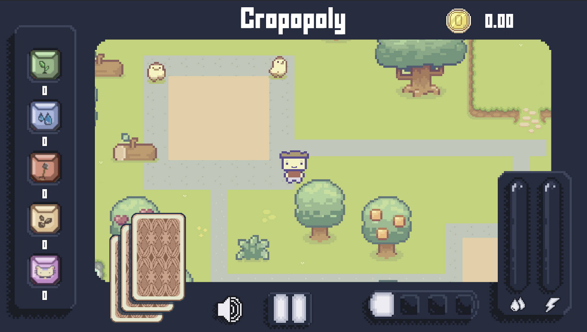
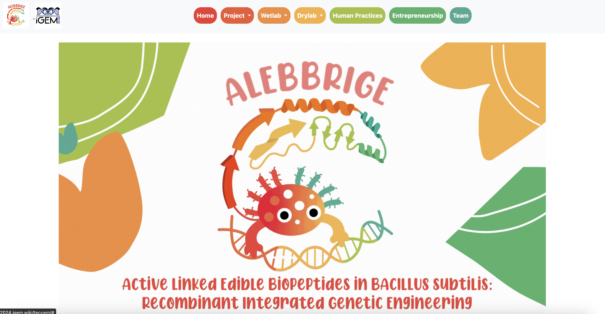

¡Acerca de mí!
¡Hola, soy Lucio Reyes! Un apasionado ingeniero en tecnologías computacionales.
Desde mis inicios en el mundo de la programación, he estado fascinado por la forma en que la tecnología puede
transformar nuestras vidas y resolver problemas complejos. Mi enfoque principal es el desarrollo de software, ciberseugirdad,
donde busco crear soluciones innovadoras, eficientes con la implementación de la inteligencia artificial.
Dale click en mi LinkedIn: https://www.linkedin.com/in/lucio-reyes-castillo/
¡Trabajos que he realizado!
A continuación, te presento algunos de los proyectos en los que he trabajado:
Zazil.click
agosto. 2024 - diciembre. 2024
El comercio electrónico sigue evolucionando, y ser parte de este cambio con Zazil.click ha sido una experiencia increíble. Este proyecto innovador, desarrollado para la Asociación Zazil, tiene como objetivo facilitar y mejorar la experiencia de compra en línea a través de una plataforma segura, intuitiva y eficiente.
Mi contribución en este proyecto estuvo enfocada en el desarrollo tecnológico, asegurando que cada parte del sistema funcionara de manera óptima, desde la aplicación móvil hasta la infraestructura web.
💻 Tecnologías clave:
- 📱 Android (Kotlin): Desarrollo de una app móvil ágil y funcional
- 🌐 React: Creación de una plataforma web responsiva y fluida
- ⚡ TypeScript: Implementación de funcionalidades avanzadas con alto rendimiento
- 📊 Servidor de base de datos: Gestión eficiente de información para un proceso de compra sin fricciones
🔐 Principales características:
- 💳 Pagos con tarjeta integrados: Brindando comodidad y confianza a los usuarios
- 🔑 Autenticación de dos factores: Reforzando la seguridad en cada transacción
- ✨ Interfaz optimizada: Diseñada para una navegación intuitiva y sin complicaciones
Más que solo una tienda en línea, Zazil.click es un ejemplo de cómo la tecnología puede potenciar el comercio electrónico, ofreciendo soluciones innovadoras que combinan funcionalidad, seguridad y accesibilidad.
Ser parte de este proyecto ha sido un reto emocionante que me ha permitido aplicar y expandir mis conocimientos en desarrollo web y móvil, reafirmando la importancia de construir plataformas digitales que realmente generen impacto.
Cropopoly
febrero. 2024 - mayo. 2024

Uno de los mayores retos en la agricultura es la falta de acceso a herramientas digitales que faciliten la toma de decisiones y optimización de recursos. En respuesta a este desafío, mi equipo y yo desarrollamos Cropopoly, un proyecto que combina tecnología, interactividad y educación para transformar la manera en que los agricultores comprenden y gestionan sus procesos.
💡 ¿Cómo lo hicimos?
- 🔹 Unity como motor de desarrollo: Diseñamos un juego interactivo que simula escenarios agrícolas reales, permitiendo a los usuarios explorar estrategias para mejorar la eficiencia en sus cultivos.
- 🔹 Página web con React y JavaScript: Desarrollamos una interfaz intuitiva y accesible para complementar la experiencia del usuario, ofreciendo información detallada y funcionalidades adicionales.
- 🔹 Servidor personalizado: Implementamos una infraestructura robusta para la gestión y almacenamiento de datos, permitiendo una conexión fluida entre el juego y la web.
- 🔹 Integración con tecnologías de análisis: Aplicamos técnicas de procesamiento de datos para evaluar el rendimiento de los jugadores y ofrecerles recomendaciones basadas en sus decisiones.
🔎 ¿Por qué es innovador?
- ✅ Gamificación aplicada a la agricultura: Transformamos procesos complejos en experiencias interactivas, facilitando la adopción de mejores prácticas agrícolas.
- ✅ Tecnología accesible: La plataforma está diseñada para ser fácil de usar, incluso para personas con poca experiencia en herramientas digitales.
- ✅ Optimización de recursos: Permite simular diferentes escenarios de cultivo y producción para ayudar a los agricultores a tomar mejores decisiones con menor riesgo.
- ✅ Conectividad y escalabilidad: La infraestructura permite futuras expansiones, integración de nuevos módulos y mejoras continuas.
ALEBBRIGE
mayo. 2024 - junio. 2024

Formé parte del equipo iGEM ALEBBRIGE (Active Linked Edible Biopeptides in B. subtilis:
Recombinant Integrated Genetic Engineering), un proyecto de biotecnología con el que participamos
en la prestigiosa competencia iGEM.
🎯 Mi rol: Desarrollo y diseño de la página web oficial del proyecto.
Me encargué de estructurar y presentar toda la información clave de manera clara, funcional y atractiva,
asegurando que nuestro trabajo e impacto fueran visibles para la comunidad científica y el jurado de iGEM.
🚀 Nuestros logros en iGEM:
🥇 Medalla de Oro
⭐️ Nominación a Best Integrated Human Practices
Este desafío me permitió fusionar tecnología y biotecnología, aplicando mis conocimientos en desarrollo web
para potenciar la visibilidad y comunicación de un proyecto innovador. Una experiencia increíble con un equipo excepcional.
Certificaciones

AWS Certified Cloud Practitioner
Emitido por: Amazon Web Services Training and Certification
Esta certificación valida que poseo un entendimiento fundamental de los servicios de TI y su aplicación en la nube de AWS. Demuestra fluidez en conceptos de computación en la nube y conocimientos básicos de AWS.
- 💡 Comprensión de los principios básicos de la nube
- 🔍 Identificación de los servicios esenciales de AWS para implementar proyectos
- 🚀 Fundamentos sobre seguridad, arquitectura, precios y soporte en AWS

AWS Knowledge: Cloud Essentials
Emitido por: Amazon Web Services Training and Certification
Esta insignia certifica que he desarrollado conocimientos fundamentales sobre conceptos esenciales de la nube en AWS, con un enfoque particular en servicios clave como:
- 🖥️ Compute
- 💾 Storage
- 🌐 Networking
- 🗄️ Database
También abarca aspectos de seguridad, arquitectura, modelos de precios y soporte en la nube de AWS, proporcionando una base sólida para la comprensión y el uso eficiente de la plataforma.

JavaScript Algorithms and Data Structures
Emitido por: freeCodeCamp
Esta insignia certifica que he desarrollado conocimientos fundamentales sobre algoritmos y estructuras de datos en JavaScript, con un enfoque particular en:
- 📊 Algoritmos de búsqueda y ordenamiento
- 🔍 Recursión y algoritmos de búsqueda binaria
- 📈 Análisis de complejidad temporal y espacial
- 🔢 Estructuras de datos como pilas, colas y listas enlazadas